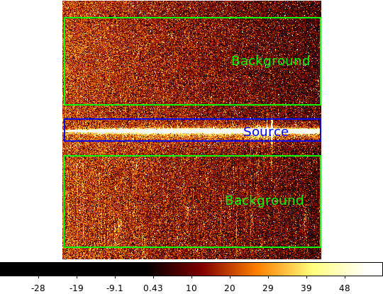
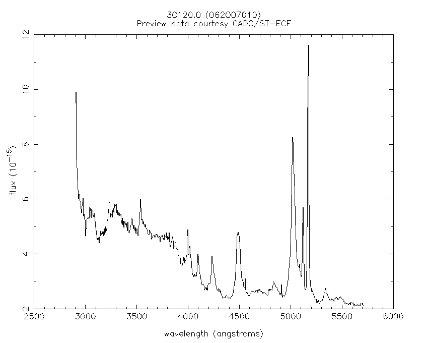
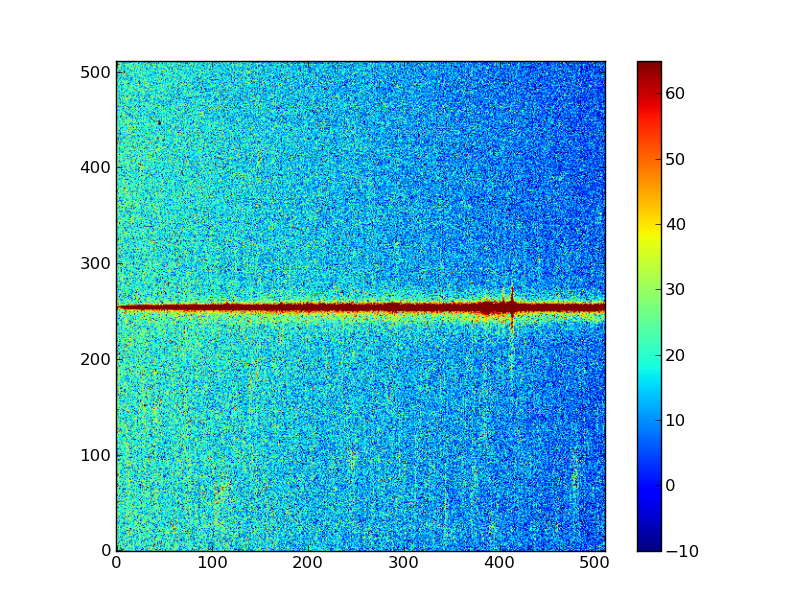
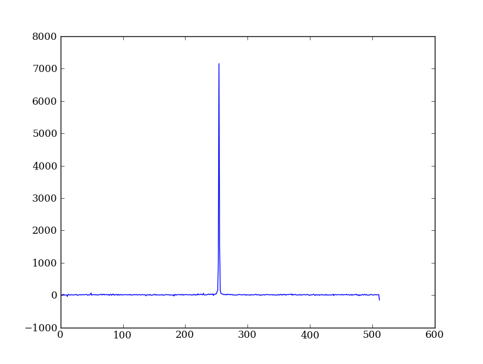
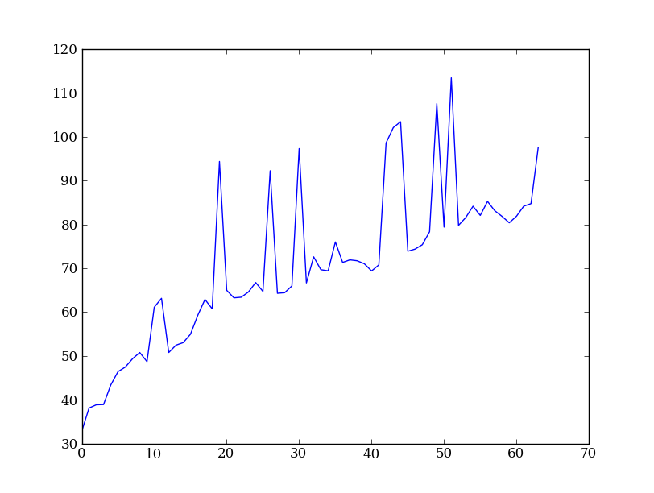
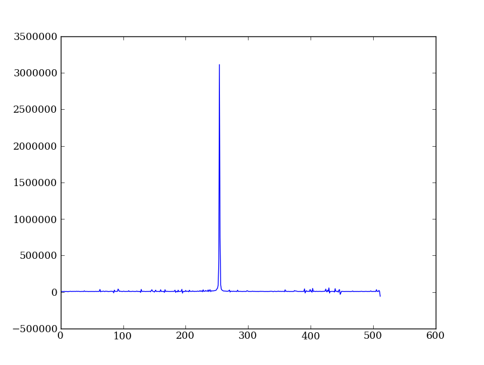
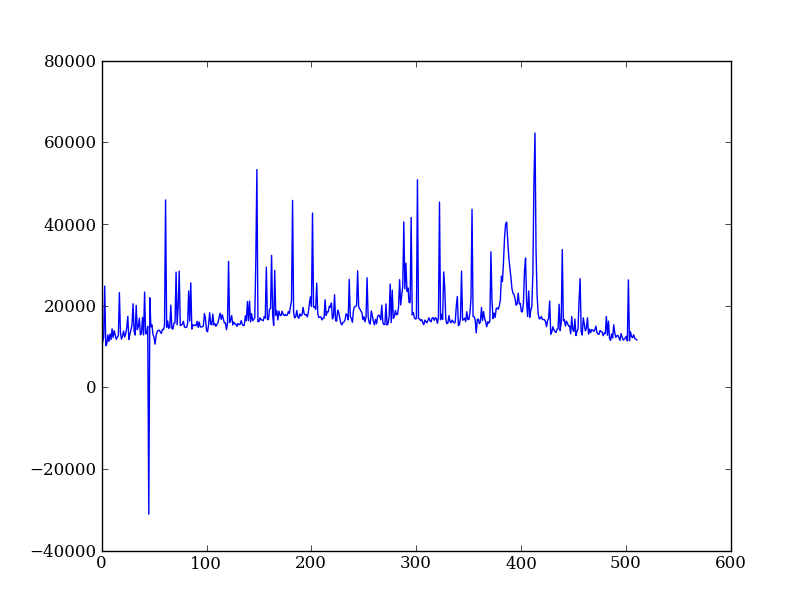
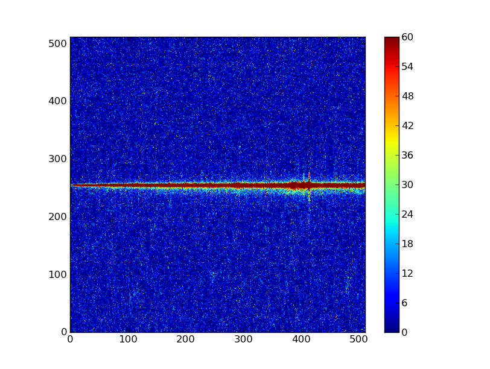
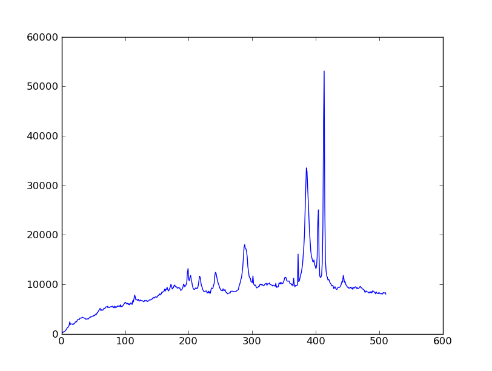

{kind=link}
{kind=link}
{kind=link}
{kind=link}
{kind=link}
{kind=link}
{kind=link}
{kind=link}
{kind=link}
{kind=link}
{kind=link}
{kind=link}
{kind=link}
{kind=link}
{kind=link}
{kind=link}
{kind=link}
{kind=link}

Contents
NumPy is at the core of nearly every scientific Python application or module since it provides a fast N-d array datatype that can be manipulated in a vectorized form. This will be familiar to users of IDL or Matlab.
NumPy has a good and systematic basic tutorial available. It is highly recommended that you read this tutorial to fill in the gaps left by this workshop, but on its own it’s a bit dry for the impatient astronomer.
Here we’ll learn NumPy by performing a very simple reduction of a 2-dimensional long slit spectrum (3C120 from HST/STIS):
| 2-d longslit image | Final 1-d spectrum |
|---|---|
|  |  |
Why NumPy? (Click to Show/Hide)
INFO
Python’s ease-of-use often comes at a price: speed. Let’s try to compute the sine of 20 million (uniform) random floats using Python’s standard modules, and time it.
import time # get access to CPU time
import math # standard module implementing mathematical operators
import random # generate random numbers
t0 = time.time()
output = []
for i in range(20000000):
output.append(math.sin(random.random()))
print time.time()-t0
This needs 13.3424 seconds (on a Dell Dual Core Genuine Intel(R), T2600, 2.16GHz, 32-bit processor) of execution time. We can gain ~50% with some tricks (list comprehension, generator and local variables):
sin,rand = math.sin,random.random
output = [sin(rand()) for i in xrange(20000000)] # in Python 3, replace xrange with range
Which tops at 8.6610 seconds. With numpy, we can gain another 50%, and have a much cleaner implementation:
output = np.sin(np.random.uniform(size=20000000))
The latter takes 3.9020 seconds to run. A pure FORTRAN program is, however, still almost 50% faster than numpy (2.2641 seconds).
Basically, numpy provides vectorized functions written in C or FORTRAN that can act on pure Python objects, with a little bit of function-call overhead. Most of the looping is done in C or FORTRAN, avoiding the expensive for loops in pure Python.
Sometimes doing things in a vectorized way is not possible or just too confusing. There is an art here and the basic answer is that if it runs fast enough then you are good to go. Otherwise things need to be vectorized or maybe coded in C or Fortran.
Before going further you need to get the example data and script files for the workshop. Now that you have a working Python installation we can do this without worrying about details of the platform (e.g. linux has wget, Mac has curl, Windows might not have tar, etc etc).
Now start IPython (ipython --pylab) or use your existing session and enter:
In [50]: import urllib2, tarfile
In [51]: url = 'http://python4astronomers.github.com/core/core_examples.tar'
In [52]: tarfile.open(fileobj=urllib2.urlopen(url), mode='r|').extractall()
In [53]: cd py4ast/core
/home/pieterd/python4esac/python4ESAC/source/py4ast/core
In [54]: ls
Leave this IPython session open for the rest of the workshop.
Exercise (for the interested reader): How did that code above work?
Explain what’s happening in each part of the previous code snippet to grab the file at a URL and untar it. Google on “python urllib2” and “python tarfile” to find the relevant module docs. Figure out how you would use the tarfile module to create a tarfile.
Click to Show/Hide Solution
Creating a tarfile is left for the reader to solve.
First read in the long-slit spectrum data. The standard file format available for download from MAST is a FITS file with three identically sized images providing the 2-d spectral intensity, error values, and data quality for each pixel. The slit direction is along the rows (up and down) and wavelength is in columns (left to right).
In [55]: import pyfits
In [56]: hdus = pyfits.open('3c120_stis.fits.gz')
In [57]: hdus
Out[57]:
[<pyfits.core.PrimaryHDU object at 0xb728b0c>,
<pyfits.core.ImageHDU object at 0xb6a372c>,
<pyfits.core.ImageHDU object at 0xb89f32c>,
<pyfits.core.ImageHDU object at 0xb6acaac>]
Type ?hdus to get a little more detail on the hdus object.
Now give meaningful names to each of the three images that are available in the FITS HDU list. You can access element n in a list with the index [n], where the count starts from 0:
In [58]: primary = hdus[0].data # Primary (NULL) header data unit
In [59]: img = hdus[1].data # Intensity data
In [60]: err = hdus[2].data # Error per pixel
In [61]: dq = hdus[3].data # Data quality per pixel
Click to Show/Hide Tip: pyFITS
TIP: pyFITS
The HDUList from a FITS file acts like an ordered dictionary: instead of accessing via an index n, you can also access the extensions by name:
In [62]: img = hdus['SCI'].data # Intensity data
In [63]: err = hdus['ERR'].data # Error per pixel
In [64]: dq = hdus['DQ'].data # Data quality per pixel
You can find (and set) the name of an extension throught the header keyword EXTNAME (case-insensitive).
In [65]: hdus[1].header['extname']
Out[65]: 'SCI'
A frequently used convention is to store scientific data in an extension named SCI. For more information on FITS files and pyFITS, see the pyFITS documentation
Next have a look at the images using one of the standard Matplotlib plotting functions:
In [66]: import pylab as plt # not needed when you run ipython with the pylab option
In [67]: import numpy as np # not needed when you run ipython with the pylab option
In [68]: plt.imshow(img)
Out[68]: <matplotlib.image.AxesImage object at 0xb68220c>
Click to Show/Hide Tip: matplotlib widget
As you can see, it is hard to see things. So, let’s set a few options for this plot. First, we want the origin in the lower left instead of the upper left corner:
In [69]: plt.clf()
In [70]: plt.imshow(img, origin = 'lower')
Out[70]: <matplotlib.image.AxesImage object at 0xb735e2c>
Second, let’s change the scaling to something more sensible. By default, plt.imshow() scales the colorbar from the minimum to the maximum value. In our case that is not the best option. We can set a lower and upper bound and add a colorbar to our plot:
In [71]: plt.clf()
In [72]: plt.imshow(img, origin = 'lower', vmin = -10, vmax = 65)
Out[72]: <matplotlib.image.AxesImage object at 0xb007f6c>
In [73]: plt.colorbar()
Out[73]: <matplotlib.colorbar.Colorbar instance at 0xaf92d8c>
Your plot should look like this (it is possible that the colormap differs, if your matplotlib has different defaults set).
Exercise: View the error and data quality images
Bring up a viewer window for the other two images. Play with the toolbar buttons on the lower-left (hint: try the four on the right first, then imagine a web browser for the three on the left). Does the save button work for you?
Click to Show/Hide Solution
# Errors
plt.clf()
plt.imshow(err, origin = 'lower', vmin = 5, vmax = 25)
plt.colorbar()
# Data quality
plt.clf()
plt.imshow(dq, origin = 'lower', vmax = 25)
plt.colorbar()
Now discover a little bit about the images you have read in, first with ?:
img?
Next use help and note the slightly different information that you get:
help(img)
Use tab completion to see all the methods in short form:
img.<TAB>
img.T img.__floordiv__ img.__isub__ img.__reduce__ img.__xor__ img.dumps img.reshape
img.__abs__ img.__format__ img.__iter__ img.__reduce_ex__ img.all img.fill img.resize
img.__add__ img.__ge__ img.__itruediv__ img.__repr__ img.any img.flags img.round
img.__and__ img.__getattribute__ img.__ixor__ img.__rfloordiv__ img.argmax img.flat img.searchsorted
img.__array__ img.__getitem__ img.__le__ img.__rlshift__ img.argmin img.flatten img.setfield
img.__array_finalize__ img.__getslice__ img.__len__ img.__rmod__ img.argsort img.getfield img.setflags
img.__array_interface__ img.__gt__ img.__long__ img.__rmul__ img.astype img.imag img.shape
img.__array_prepare__ img.__hash__ img.__lshift__ img.__ror__ img.base img.item img.size
img.__array_priority__ img.__hex__ img.__lt__ img.__rpow__ img.byteswap img.itemset img.sort
img.__array_struct__ img.__iadd__ img.__mod__ img.__rrshift__ img.choose img.itemsize img.squeeze
img.__array_wrap__ img.__iand__ img.__mul__ img.__rshift__ img.clip img.max img.std
img.__class__ img.__idiv__ img.__ne__ img.__rsub__ img.compress img.mean img.strides
img.__contains__ img.__ifloordiv__ img.__neg__ img.__rtruediv__ img.conj img.min img.sum
img.__copy__ img.__ilshift__ img.__new__ img.__rxor__ img.conjugate img.nbytes img.swapaxes
img.__deepcopy__ img.__imod__ img.__nonzero__ img.__setattr__ img.copy img.ndim img.take
img.__delattr__ img.__imul__ img.__oct__ img.__setitem__ img.ctypes img.newbyteorder img.tofile
img.__delitem__ img.__index__ img.__or__ img.__setslice__ img.cumprod img.nonzero img.tolist
img.__delslice__ img.__init__ img.__pos__ img.__setstate__ img.cumsum img.prod img.tostring
img.__div__ img.__int__ img.__pow__ img.__sizeof__ img.data img.ptp img.trace
img.__divmod__ img.__invert__ img.__radd__ img.__str__ img.diagonal img.put img.transpose
img.__doc__ img.__ior__ img.__rand__ img.__sub__ img.dot img.ravel img.var
img.__eq__ img.__ipow__ img.__rdiv__ img.__subclasshook__ img.dtype img.real img.view
img.__float__ img.__irshift__ img.__rdivmod__ img.__truediv__ img.dump img.repeat
Finally find the shape of the image and its minimum value:
In [74]: img.shape # Get the shape of img
Out[74]: (512, 511)
In [75]: img.min() # Call object method min with no arguments
Out[75]: -44424.844
Before going further on the spectral extraction project we need to learn about a few key features of NumPy.
Arrays can be created in different ways:
In [76]: a = np.array([10, 20, 30, 40]) # create an array from a list of values
In [77]: a
Out[77]: array([10, 20, 30, 40])
In [78]: b = np.arange(4) # create an array of 4 integers, from 0 to 3
In [79]: b
Out[79]: array([0, 1, 2, 3])
In [80]: np.linspace(-np.pi, np.pi, 5) # create an array of 5 evenly spaced samples from -pi to pi
Out[80]: array([-3.14159265, -1.57079633, 0. , 1.57079633, 3.14159265])
In [81]: np.logspace(1,3,9) # create a log-spaced array of 9 floats between (and including) 10 and 1000
Out[81]:
array([ 10. , 17.7827941 , 31.6227766 , 56.23413252,
100. , 177.827941 , 316.22776602, 562.34132519,
1000. ])
The function arange is better only used when working with integer arguments.
Click to Show/Hide Tip: creating sequences of numbers
TIP: creating sequences of numbers
A general interface for creating arrays in provided by np.mgrid. The syntax is slightly different than before, because it uses index slices instead of arguments.
In [82]: np.mgrid[0:5:1]
Out[82]: array([0, 1, 2, 3, 4])
In [83]: np.mgrid[0:5:10j]
Out[83]:
array([ 0. , 0.55555556, 1.11111111, 1.66666667, 2.22222222,
2.77777778, 3.33333333, 3.88888889, 4.44444444, 5. ])
And in more dimensions:
In [84]: x,y = np.mgrid[-1:3:5j,0:2:0.5]
In [85]: x
Out[85]:
array([[-1., -1., -1., -1.],
[ 0., 0., 0., 0.],
[ 1., 1., 1., 1.],
[ 2., 2., 2., 2.],
[ 3., 3., 3., 3.]])
In [86]: y
Out[86]:
array([[ 0. , 0.5, 1. , 1.5],
[ 0. , 0.5, 1. , 1.5],
[ 0. , 0.5, 1. , 1.5],
[ 0. , 0.5, 1. , 1.5],
[ 0. , 0.5, 1. , 1.5]])
New arrays can be obtained by operating with existing arrays:
In [87]: a + b**2 # elementwise operations
Out[87]: array([10, 21, 34, 49])
Arrays may have more than one dimension:
In [88]: f = np.ones([3, 4]) # 3 x 4 float array of ones
In [89]: f
Out[89]:
array([[ 1., 1., 1., 1.],
[ 1., 1., 1., 1.],
[ 1., 1., 1., 1.]])
In [90]: g = np.zeros([2, 3, 4], dtype=int) # 3 x 4 x 5 int array of zeros
In [91]: g
Out[91]:
array([[[0, 0, 0, 0],
[0, 0, 0, 0],
[0, 0, 0, 0]],
[[0, 0, 0, 0],
[0, 0, 0, 0],
[0, 0, 0, 0]]])
In [92]: i = np.zeros_like(f) # array of zeros with same shape/type as f
You can change the dimensions of existing arrays:
In [93]: w = np.arange(12)
In [94]: w.shape = [3, 4] # does not modify the total number of elements
In [95]: w
Out[95]:
array([[ 0, 1, 2, 3],
[ 4, 5, 6, 7],
[ 8, 9, 10, 11]])
In [96]: x = np.arange(5)
In [97]: x
Out[97]: array([0, 1, 2, 3, 4])
In [98]: y = x.reshape(5, 1)
In [99]: y = x.reshape(-1, 1) # Same thing but NumPy figures out correct length
In [100]: y
Out[100]:
array([[0],
[1],
[2],
[3],
[4]])
It is possible to operate with arrays of different dimensions as long as they fit well (broadcasting):
In [101]: x + y * 10
Out[101]:
array([[ 0, 1, 2, 3, 4],
[10, 11, 12, 13, 14],
[20, 21, 22, 23, 24],
[30, 31, 32, 33, 34],
[40, 41, 42, 43, 44]])
Warning
Lists and array behave fundamentally different!
In [102]: mylist = [1,2,3]
In [103]: myarray = np.array([1,2,3])
In [104]: mylist*2
Out[104]: [1, 2, 3, 1, 2, 3]
In [105]: myarray*2
Out[105]: array([2, 4, 6])
Exercise: Make a ripple
Calculate a surface z = cos(r) / (r + 5) where r = sqrt(x**2 + y**2). Set x to an array that goes from -20 to 20 stepping by 0.25 Make y the same as x but “transposed” using the reshape trick above. Use plt.imshow to display the image of z.
Click to Show/Hide Solution
In [106]: x = np.arange(-20, 20, 0.25)
In [107]: y = x.reshape(-1, 1)
In [108]: r = np.sqrt(x**2 + y**2) # note the broadcasting behaviour
In [109]: z = np.cos(r) / (r + 5)
In [110]: plt.imshow(z, origin = 'lower')
Out[110]: <matplotlib.image.AxesImage object at 0xb119fcc>
or alternatively:
In [111]: x,y = np.mgrid[-20:20:200j,-20:20:200j]
In [112]: r = np.sqrt(x**2 + y**2) # broadcasting not needed because x and y have the same shape
In [113]: z = np.cos(r) / (r + 5)
In [114]: plt.imshow(z, origin = 'lower')
Out[114]: <matplotlib.image.AxesImage object at 0xb12326c>
NumPy provides powerful methods for accessing array elements or particular subsets of an array, e.g. the 4th column or every other row. This is called slicing. The outputs below illustrate basic slicing, but you don’t need to type these examples:
In [115]: a = np.arange(20).reshape(4,5)
In [116]: a
Out[116]:
array([[ 0, 1, 2, 3, 4],
[ 5, 6, 7, 8, 9],
[10, 11, 12, 13, 14],
[15, 16, 17, 18, 19]])
In [117]: a[2, 3] # select element in row 2, col 3 (counting from 0)
Out[117]: 13
In [118]: a[2, :] # select every element in row 2
Out[118]: array([10, 11, 12, 13, 14])
In [119]: a[:, 0] # select every element in col 0
Out[119]: array([ 0, 5, 10, 15])
In [120]: a[0:3, 1:3]
Out[120]:
array([[ 1, 2],
[ 6, 7],
[11, 12]])
As a first practical example plot column 300 of the longslit image to look at the spatial profile:
In [121]: plt.figure() # make a new figure -- by default matplotlib overplots.
Out[121]: <matplotlib.figure.Figure object at 0xb10cecc>
In [122]: plt.plot(img[:, 300])
Out[122]: [<matplotlib.lines.Line2D object at 0xb0764ac>]
Note that as long as you don’t close existing figures, they will be kept in memory. If you want to close the current figure, call plt.close(). If you want to close all figures call plt.close('all').
The full slicing syntax also allows for a step size:
<slice> = i0:i1:step
array[<slice0>, <slice1>, ...]
Exercise: Slice the error array
Click to Show/Hide Solution
In [123]: plt.clf()
In [124]: plt.plot(err[254, 10:200:3])
Out[124]: [<matplotlib.lines.Line2D object at 0xbb8448c>]
In [125]: dq[251:254, 101:105]
Out[125]:
array([[ 0, 1024, 1024, 1024],
[ 16, 1040, 1024, 1024],
[ 0, 1024, 1040, 1024]], dtype=int16)
The index upper bound i1 is one more than the final index that gets included in the slice. In other words the slice includes everything up to, but not including, the index upper bound i1. There are good reasons for this, but for now just accept and learn it.
Plot the spatial profile by summing along the wavelength direction:
In [126]: profile = img.sum(axis=1)
In [127]: plt.figure()
Out[127]: <matplotlib.figure.Figure object at 0xbb89eac>
In [128]: plt.plot(profile)
Out[128]: [<matplotlib.lines.Line2D object at 0xbbf14ac>]
Now plot the spectrum by summing along the spatial direction:
In [129]: spectrum = img.sum(axis=0)
In [130]: plt.figure()
Out[130]: <matplotlib.figure.Figure object at 0xbbf1e6c>
In [131]: plt.plot(spectrum)
Out[131]: [<matplotlib.lines.Line2D object at 0xbc7d66c>]
Since most of the sum is in the background region there is a lot of noise and cosmic-ray contamination.
 Exercise: Use slicing to make a better spectrum plot
Use slicing to do the spectrum sum using only the rows in the image where there is a signal from the source. Hint: zoom into the profile plot to find the right row range.
Click to Show/Hide Solution
In [132]: spectrum = img[250:260, :].sum(axis=0)
In [133]: plt.clf()
In [134]: plt.plot(spectrum)
Out[134]: [<matplotlib.lines.Line2D object at 0xbcb9e4c>]
Plot five columns (wavelength) from the spectrum image as follows:
In [135]: plt.clf()
In [136]: plt.plot(img[:, 254:259])
Out[136]:
[<matplotlib.lines.Line2D object at 0xbd51f4c>,
<matplotlib.lines.Line2D object at 0xbd51fec>,
<matplotlib.lines.Line2D object at 0xbdb016c>,
<matplotlib.lines.Line2D object at 0xbdb024c>,
<matplotlib.lines.Line2D object at 0xbdb032c>]
The basic idea in spectral extraction is to subtract out the background and sum over rows with the source signal.
It’s evident that there are significant cosmic ray defects in the data. In order to do a good job of subtracting the background we need to filter them out. Doing this correctly in general is difficult and in reality one would just use the answers already provided by STSci.
Strategy: Use a median filter to smooth out single-pixel deviations. Then use sigma-clipping to remove large variations between the actual and smoothed image.
In [137]: import scipy.signal
In [138]: img_sm = scipy.signal.medfilt(img, 5)
In [139]: sigma = np.median(err)
In [140]: bad = np.abs(img - img_sm) / sigma > 8.0
In [141]: img_cr = img.copy()
In [142]: img_cr[bad] = img_sm[bad]
In [143]: img_cr[230:280,:] = img[230:280,:] # Filter only for background
Check if it worked:
In [144]: plt.clf()
In [145]: plt.plot(img_cr[:, 254:259])
Out[145]:
[<matplotlib.lines.Line2D object at 0xc115d6c>,
<matplotlib.lines.Line2D object at 0xc115e8c>,
<matplotlib.lines.Line2D object at 0xc115f6c>,
<matplotlib.lines.Line2D object at 0xc115fec>,
<matplotlib.lines.Line2D object at 0xc11a14c>]
This introduces the important concept of slicing with a boolean mask. Let’s look at a smaller example:
In [146]: a = np.array([1, 4, -2, 4, -5])
In [147]: neg = (a < 0) # Parentheses here for clarity but are not required
In [148]: neg
Out[148]: array([False, False, True, False, True], dtype=bool)
In [149]: a[neg] = 0
In [150]: a
Out[150]: array([1, 4, 0, 4, 0])
A slightly more complex example shows that this works the same on N-d arrays and that you can compose logical expressions:
In [151]: a = np.arange(25).reshape(5,5)
In [152]: ok = (a > 6) & (a < 17) # "ok = a > 6 & a < 17" will FAIL!
In [153]: a[~ok] = 0 # Note the "logical not" operator
In [154]: a
Out[154]:
array([[ 0, 0, 0, 0, 0],
[ 0, 0, 7, 8, 9],
[10, 11, 12, 13, 14],
[15, 16, 0, 0, 0],
[ 0, 0, 0, 0, 0]])
Exercise [intermediate]: circular region slicing
Remember the surface z = cos(r) / (r + 5) that you made previously. Set z = 0 for every pixel of z that is within 10 units of (x,y) = (10, 15).
Click to Show/Hide Solution
In [155]: dist = np.sqrt((x-10)**2 + (y-15)**2)
In [156]: mask = dist < 10
In [157]: z[mask] = 0
In [158]: plt.imshow(z, origin = 'lower')
Out[158]: <matplotlib.image.AxesImage object at 0xc1333ec>
Detour: copy versus reference
Variable names in Python are just pointers to the actual Python object. To see this clearly do the following:
In [159]: a = np.arange(4)
In [160]: b = a**2
In [161]: a[1] = 100
In [162]: a
Out[162]: array([ 0, 100, 2, 3])
In [163]: b # Still as expected after changing "a"
Out[163]: array([0, 1, 4, 9])
To subtract the background signal from the source region we want to fit a quadratic to the background pixels and subtract that quadratic from the entire image which includes the source region.
Let’s tackle a simpler problem first and fit the background for a single column:
In [164]: x = np.append(np.arange(10, 200), np.arange(300, 480)) # Background rows
In [165]: y = img_cr[x, 10] # Background rows of column 10 of cleaned image
In [166]: plt.figure()
Out[166]: <matplotlib.figure.Figure object at 0xc121a8c>
In [167]: plt.plot(x, y)
Out[167]: [<matplotlib.lines.Line2D object at 0xc2389ec>]
In [168]: pfit = np.polyfit(x, y, 2) # Fit a 2nd order polynomial to (x, y) data
In [169]: yfit = np.polyval(pfit, x) # Evaluate the polynomial at x
In [170]: plt.plot(x, yfit)
Out[170]: [<matplotlib.lines.Line2D object at 0xc238eac>]
In [171]: plt.grid()
Now do this for every column and store the results in a background image:
In [172]: xrows = np.arange(img_cr.shape[0]) # Array from 0 .. N_rows-1
In [173]: bkg = np.zeros_like(img_cr) # Empty image for background fits
In [174]: for col in np.arange(img_cr.shape[1]): # Iterate over columns
.....: pfit = np.polyfit(x, img_cr[x, col], 2) # Fit poly over bkg rows for col
.....: bkg[:, col] = np.polyval(pfit, xrows) # Eval poly at ALL row positions
.....:
In [177]: plt.clf()
In [178]: plt.imshow(bkg, origin = 'lower', vmin=0, vmax=20)
Out[178]: <matplotlib.image.AxesImage object at 0xc2aad8c>
In [179]: plt.colorbar()
Out[179]: <matplotlib.colorbar.Colorbar instance at 0xc2b11cc>
Finally subtract this background and see if it worked:
In [180]: img_bkg = img_cr - bkg
In [181]: plt.clf()
In [182]: plt.imshow(img_bkg, origin = 'lower', vmin=0, vmax=60)
Out[182]: <matplotlib.image.AxesImage object at 0xc3d2ccc>
In [183]: plt.colorbar()
Out[183]: <matplotlib.colorbar.Colorbar instance at 0xc3d80cc>
| Background subtracted | Original |
|---|---|
|  |
Now the final step is easy and is left as an exercise.
| Python for Astronomers Spectrum | HST official spectrum |
|---|---|
|  |
Exercise: Make the final spectrum
Sum the rows of the background subtracted spectrum and plot. Hint: you already did it once in a previous exercise.
Click to Show/Hide Solution
spectrum = img_bkg[250:260, :].sum(axis=0)
plt.clf()
plt.plot(spectrum)
To do: flux calibration and wavelength calibration!
It is impossible to do justice to the full contents of the SciPy package: is entirely too large! What is left as homework for the reader is to click through to the main SciPy Reference Manual and skim the tutorial. Keep this repository of functionality in mind whenever you need some numerical functionality that isn’t in NumPy: there is a good chance it is in SciPy: